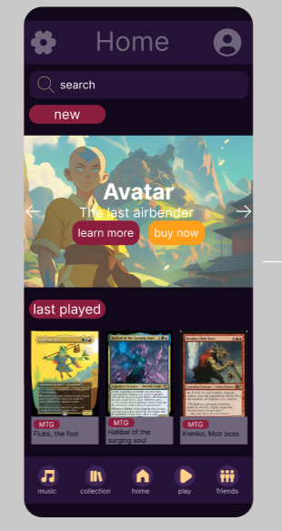

Game Website – UI Project
Het is een project waar ik samen met een klasgenoot aan gewerkt heb. Samen zijn wij aan de slag
gegaan
om een app te creeëren die kan gebruikt worden bij het spelen van Magic The Gathering maar ook voor
Dungeons & Dragons. Hierin kan je al je decks bij te houden. Zowel diegene die je zelf hebt gebouwd
maar
ook precons kunnen hierin opgeslagen worden. Eerder had ik al verteld dat D&D ook gespeeld kan
worden
door middel van je karaktersheets erin toe te voegen dat deze overal met je mee hebt. Deze app is
appart
van de rest doordat je tijdens het spelen ook een muziekfunctie aanwezig is. Wij zijn met dit
probleem
aan de slag gegaan omdat wij niet meer met zowel spotify als een website voor al je decks of 7
deckdozen
wouden houden. Door deze applicatie is alls dus op 1 handige plaats.
We zijn dus begonnen met brainstormen van hoe en wat er nu precies allemaal in kwam te staan en hoe
we
alles het beste konden weergeven. Daarna hebben we een taskflow uitgewerkt en zijn we gaan
wireframen.
Hierbij hebben wij ook een website versie moeten maken zodat het overal toegankelijk is. Als laaste
hebben wij nagedacht over een uitwerking. Dit hebben wij beide individueel gedaan om zelf een heel
mooi
eind resultaat te creëren.
UI-project rond het ontwerpen van een game app.
80% afgerond
figma
